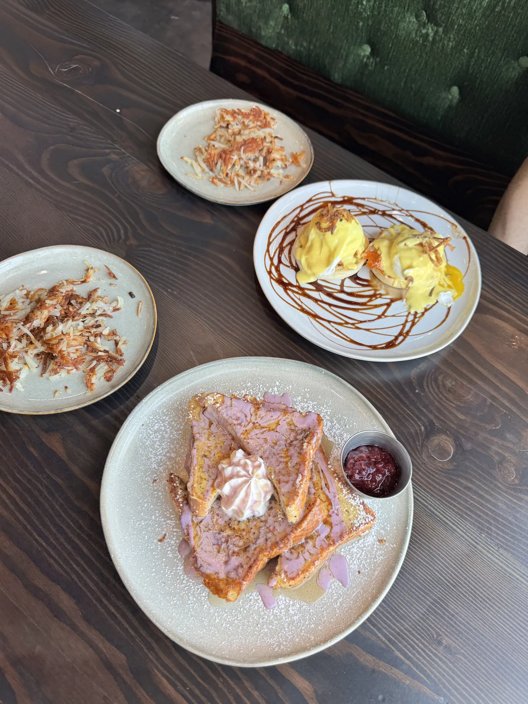
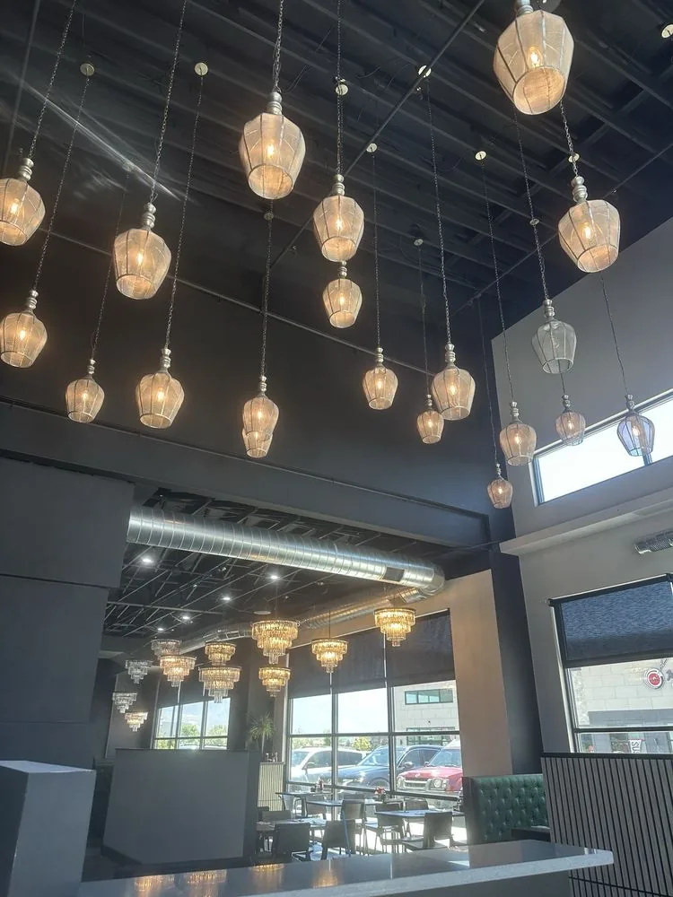
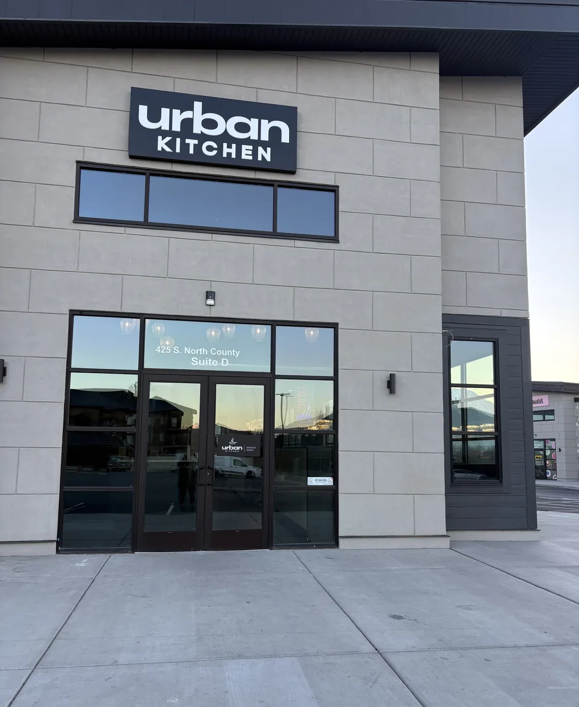
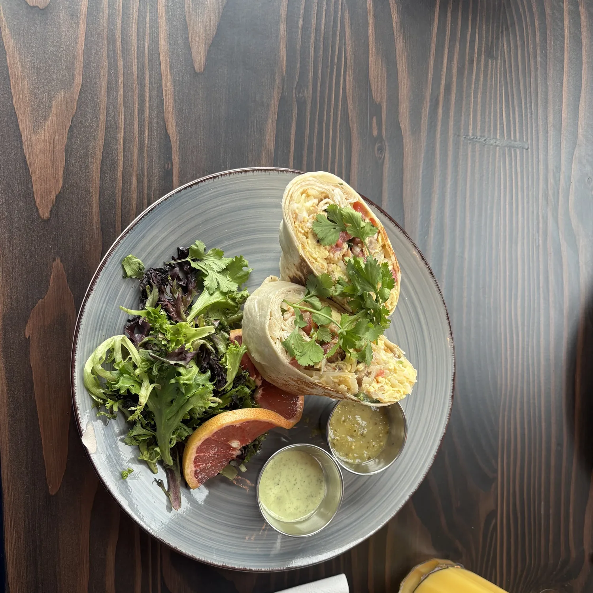
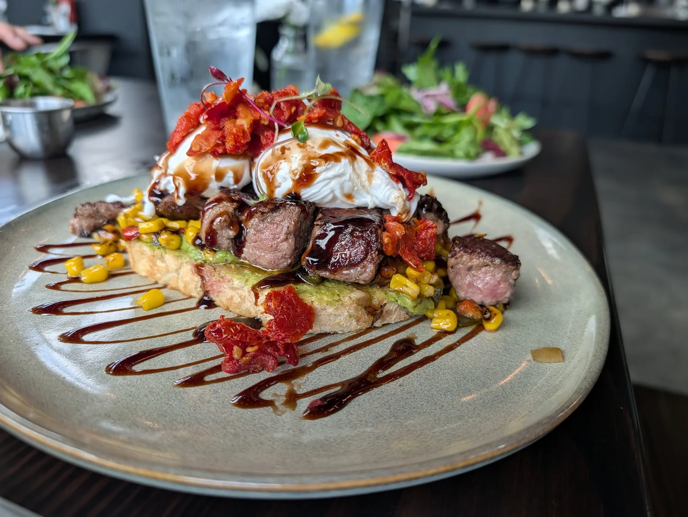
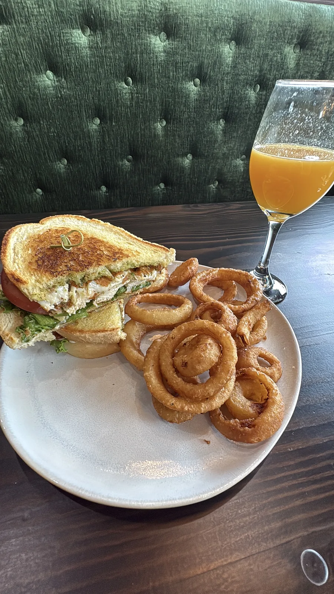
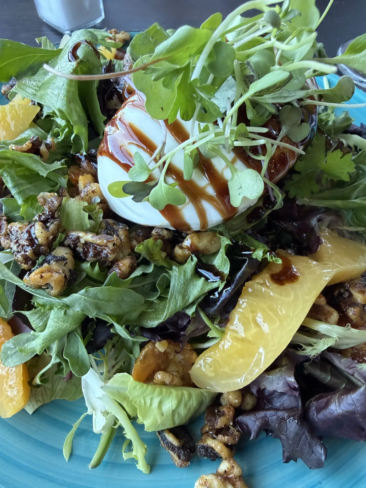
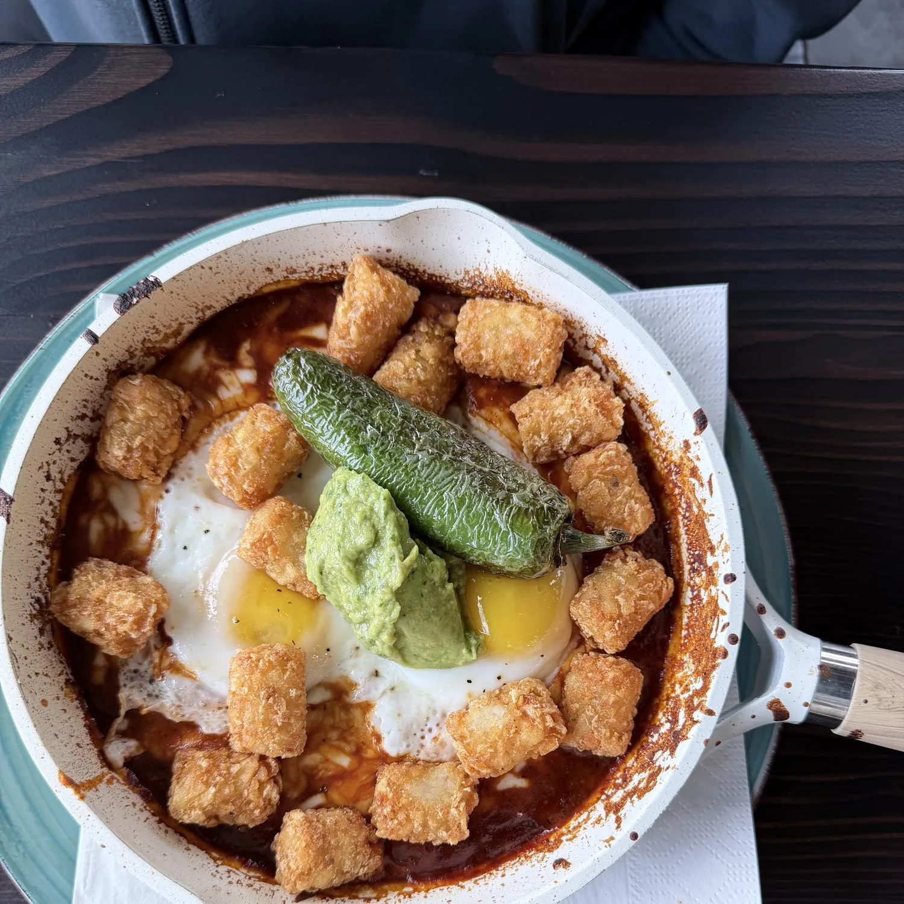
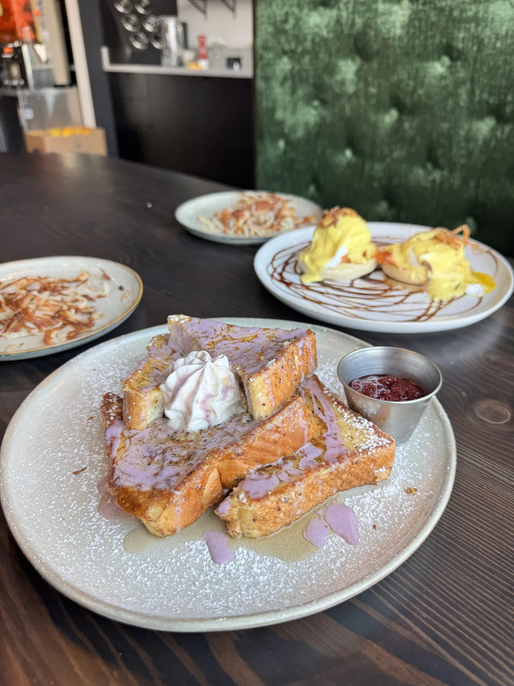

French Toast
Thick-cut brioche dipped in vanilla, egg, milk, and cinnamon, served with homemade berry compote, powdered sugar, and whipped cream.
$12.50Pleasant Grove · Utah
Daily brunch from 8:00 AM, with fresh breakfast and lunch plates, plus Croatian and Mediterranean inspired dinner Friday and Saturday nights.

Our Story
Urban Kitchen is where craft meets comfort. We focus on fresh, made-to-order breakfast and lunch favorites — from buttery French toast to slow-pulled benedicts — served in a stylish, atmospheric space designed to slow you down.
Velvet booths, crystal chandeliers, and the quiet hum of espresso. Stay a while.
Gallery
A look inside the dining room and a taste of what's coming out of the kitchen.








Follow Along
Google Reviews
Read recent feedback from guests and share your own visit after brunch.
Open our Google profile for the latest guest reviews.
Open our Google profile to read the latest reviews or share your visit.
View Google ReviewsVisit Us
425 S. North County, Suite D
Pleasant Grove, UT
Brunch Mon-Fri 8:00 AM-2:00 PM
Brunch Sat-Sun 8:00 AM-3:00 PM
Dinner Fri-Sat 5:00 PM-9:00 PM